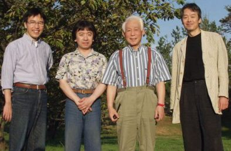
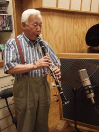
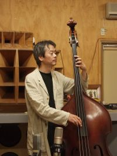
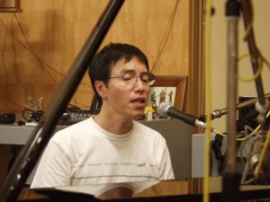
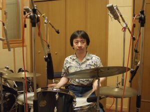
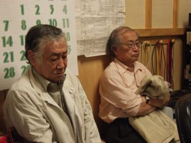
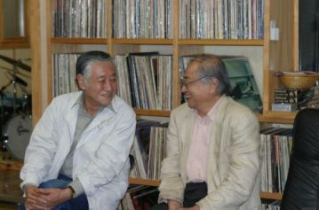
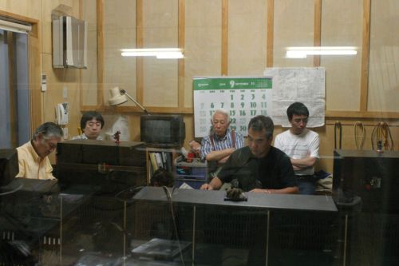

2004.09.01–03 河内スタヂオ録音
Session II
北村英治カルテット北村英治 (cl) / 高浜和英 (p, vo) / 山口雄三 (b) / 八城邦義 (ds)
About the Album
作品紹介
「セッションⅡ」 JCCD-0010
高浜和英のヴォーカルも交えた
カルテットの第2弾
北村英治（ｃｌ）,高浜和英(p vo),
山口雄三(b), 八城邦義(ds ￥3,000(税込み）
購入先はこちら>>> 北村英治HP
［曲目］
1. 二人でお茶を 2. ゼイ・セイ・イッツ・ワンダフル 3. さつきに寄せて 4. チャタヌガ・チュー・チュー 5. ジーズ・フーリッシュ・シングス 6. 君去りし後 7. 虹のかなたに 8. スイート・ジョージア・ブラウン 9. モナリザ 10. アイブ・ゴット・ザ・ワールド・オン・ア・ストリング 11. ハートエイクス 12. チャイナタウン・マイ・チャイナタウン 13. ビギン・ザ・ビギン 14. ボナセラ 15. ローズルーム
Recording Report
レコーディングレポート
北村英治 セッションII Recording Report
レコーディングレポート9/1～3 2004

今回の北村さんの録音はレギュラーメンバーでの録音セッションが好評だったので普段ライブハウスなどで演奏されている曲を中心に録音することになりました。
また今回は高浜さん（ｐ）の歌も何曲か入れますとのことでした。
ピアノの高浜さんは前に“ロミ＆ジョーカーズ”というバンドにおられてピアノを弾きながら歌やコーラスをやっておられた方です。
北村さんのライブやコンサートではよく高浜さんの歌を何曲かフューチャーして演奏してましたので私もいつか高浜さんの歌が入った録音をやってみたいと思っておりましたので大変楽しみでした。なにせいい声なのですまた楽器を演奏されるボーカリストは音程がっとってもいいので聴いていて気持ちよくなります。


ドラムは八城邦義さん、ベースは今回は山口雄三さんです、雄三さんは何回も録音させてもらってますのでメンバーはみんな身内みたいな感じでとてもリラックスしてレコーディングが出来ました。


また今回岩浪洋三先生と森山浩志先生が取材＆アドバイザーとして来られました、岩浪先生は言わずとしれたジャズ評論家でスイングジャーナルの元編集長、森山先生はあの菅野沖彦さんのオーディオ・ラボのほとんどの作品のディレクターをやっておられた凄い方です、このお二人が調整室で聴いておられるので少し緊張しましたがお二人ともとても穏和で優しい方でした、打ち上げの時など色んなジャズのエピソードを裏話を交えて話して頂き盛り上がってしまいました。


録音は演奏とボーカルのバランスとのチェックを兼ねて ボナセラ から、うーんやっぱり高浜さんはいい声だピアニストとしてじゃなくボーカリストとしても十分仕事していける方だと思いました（期待してください）。
ティーフォーツー、ローズルーム、オーバーザレインボウ、などおなじみの曲をいい感じで収録本当に楽しいアルバムが出来たと思いました。

編集中